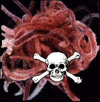

Mi amigo Mogens Winther me envía un interesante artículo desde Dinamarca. La astrología es muy popular en esa parte del mundo y hemos tenido discusiones interesantes acerca de La Sociedad Internacional de Astrólogos de Negocios en Dinamarca (ISBA son sus siglas en inglés) y puedes leer sobre ellos en http://www.skeptica.dk/mw/astrologi/randi.htm. Como resultado de mi reto a la ISBA, su directiva se enojó y prontamente detuvieron toda la discusión sobre la amenaza de acción legal con la que habían amenazado al señor Winther. Sin embargo, él me informa, que la asociación continúa creciendo. Fíjense en http://www.businessastrologers.com y miren lo que tienen ellos que decir.

En su enlace http://www.amanita.at/e/e-Diss.htm, pueden leer sobre un reciente caso de astrología para negociantes en una universidad en Viena, Austria. Usted aprenderá todo sobre el señor Zimmel y la presidente del ISBA la señora Boesen. La directora del grupo Escéptico EU (www.skeptica.dk) Kees de Jaeger ha tenido que trabajar con los absurdos reclamos del ISBA.
Mogens nos dice que los tipos de la astrología de negocios han tenido bastante de— impredecible— mala suerte. Las predicciones “doradas” realizadas sobre sus acciones en la bolsa de valores para el año 2000 no escalaron las alturas como cohete acelerado sino que más bien fueron declaradas entre las peores diez inversiones de ese año. Morgens también nos cuenta de otro contratiempo…
En Escandinavia, los astrólogos han estado protestando debido a una ley de Protección al Trabajador aceptada por el Parlamento. La ley se refiere directamente a una declaración internacional que estrictamente advierte en contra del uso de grafología o astrología:
[Esta ley] toma medidas para que las pruebas de personalidad o cualquier procedimiento de este tipo sean consistentes con las provisiones del código y no deben ser conducidas en contra de la voluntad del trabajador…Las leyes nacionales o las regulaciones, que especifican el alcance del consentimiento de los trabajadores o los consejos y sindicatos de trabajo y los requerimientos que gobiernan la administración (por ejemplo que las pruebas sean válidas) suplementarán esta disposición del código. En este respecto, el uso de astrología, grafología y otras como éstas, deben ser impedidas y evitadas.
Ambas, la astrología y la grafología, junto a los biorritmos, han sido usadas ampliamente en Europa, en la India y en Asia para determinar si los aplicantes eran los correctos para ciertas plazas de trabajo. Nosotros sólo nos preguntamos si esta nueva ley sobrevivirá a las objeciones rabiosas que seguro serán hechas por los devotos creyentes…
Increible. Realmente increible. Estamos acostumbrados a recibir proposiciones bastante bizarras aquí en el JREF (James Randi Educational Foundation). Los quejidos emitidos por Andrew Harter son indicación suficiente de todas esas que yo nunca llego a leer. Generalizando, las proposiciones más divertidas son enviadas por personas sin ningún tipo de calificación, conocimiento o credenciales científicas. Ocasionalmente, alguien con las credenciales apropiadas envía una reclamación válida (las más frecuentes son de radiestesia, la adivinación de aguas subterráneas o “dowsing” y también otras habilidades adivinatorias) que deben ser tomadas más seriamente.
Existe un diario científico titulado “Frontier perspectives” el cual es publicado por el Centro de las Ciencias Fronterizas en la Universidad de Temple, en Filadelfia. Se jacta de ser una publicación científica, pero está tan lleno de seudociencias y magufería, que el profesor John Allen Paulos, de la Universidad Temple y autor de “Innumeracy”, reporta que la facultad de Temple se siente avergonzada por el diario.
Así, analizamos el reclamo del doctor Amrit Sorli del Insitituto para la Meditación y el Crecimiento Espiritual en Frosini, Italia. Él nos informa que la publicación de su experimento en “Frontier Perspectives” le brinda credibilidad a sus resultados. Examinemos lo que fue publicado y luego consideremos el grado de credibilidad que le daremos a estos resultados.
Primero, habían serios, y entendibles, problemas de lenguaje en la descripción del doctor. Ninguno de estos problemas fueron corregidos por los editores de “Frontier Perspectives” por lo que la organización del experimento era totalmente indescifrable. Hice lo que pude para entender el reporte y revisarlo y le escribí a su autor vía e-mail:
Déjeme intentar reconstruir su experimento. Me refiero al elaborado en agosto-septiembre de 1998 en Ljubljana, Yugoslavia. Por favor, dígame si cualquiera de los detalles es incorrecto.
Usted utilizó dos ampollas de vidrio selladas. Una era la ampolla experimental, la otra era la ampolla control. En la ampolla experimental usted puso 70 gramos de gusanos californianos vivos. Además, usted también puso ahí dentro, sin sellar y de pie, otro tubo pequeño de vidrio que contenía 0.25 ml del 36% de una solución aguada de formaldeído. Usted preparó la ampolla control que contenía 70 ml de agua destilada y un tubo de cristal similar al anterior, sin sellar y de pie, con 0.25 del 36% de una solución aguada de formaldeído. Usted selló herméticamente ambas ampollas derritiendo sus puntas y las lavó con una solución de etanol. Luego las secó.
Después, usted las apartó por una hora y después de ésto comenzó a pesarlas. Usted pesó ambos tubos (3 veces) con intervalos de cinco minutos. Luego, usted invirtió los tubos para que el formaldeído se derramara dentro de las ampollas. Después, usted pesó los tubos en intervalos de quince minutos. Este experimento fue repetido doce veces.
¿Es ésta una reconstrucción correcta?
El doctor Sorli no ha respondido a la pregunta anterior acerca de si mi exposición sobre lo que entendí del experimento era o no correcta. De hecho, como verán ustedes, él estuvo muy reacio a responder de forma útil y, eventualmente, cerró la puerta hacia cualquier tipo de comunicación futura conmigo, aún cuando inicialmente había escrito para hacer una aplicación por el premio del millón de dólares.
Los resultados reportados sobre el procedimiento experimental que he tratado de describir aquí, aseguraban que cada tres minutos, después que los tubos habían sido invertidos (y los gusanos habían sido envenenados) Sorli encontró un aumento en el peso de la ampolla experimental que hacía una cantidad total de 60 microgramos seguido inmediatamente por un descenso del peso de 90 microgramos por debajo del peso inicial. Él decía en sus conclusiones:
El experimento muestra que existe una energía desconocida concentrada en los organismos vivos y que esta energía abandona los organismos en el momento de la muerte. Es una energía que la ciencia no conoce todavía.
(Esencialmente, este es el mismo reclamo que ha sido hecho muchas veces en el pasado por espiritualistas que han intentado pesar almas. Parece que para determinar el peso promedio del alma de un gusano, el doctor Sorli sólo necesita dividir 90 microgramos por el número de gusanos asesinados…)
Una pequeña pausa aquí. El último reclamo, de sus medidas, requiere de análisis. El doctor Sorli dice que es capaz de detectar un cambio que suma ¡menos que una millonésima del peso del tubo experimental! Y, él escribe (he realizado correcciones para mejorar la claridad):
El tamaño de ambos tubos debe ser igual porque la humedad del aire está cambiando constantemente y entonces, la condensación de hidratante sobre los tubos sería diferente. Al cambiar la temperatura de los tubos la condensación de la humedad se vuelve diferente, así que medía la temperatura de ambos tubos de prueba con un termómetro sensible.
En la década de los años setenta, usé una vez una escala electrónica del tipo que el doctor Sorli dice que utilizó, aunque estoy seguro que la tecnología ha avanzado mucho desde entonces. Yo descubrí que si medía más allá de los límites razonables del experimento, podría ¡detectar el peso de una huella digital en un tubo de ensayo! Esto explica porqué le pregunté al doctor Sorli cómo había agarrado los tubos durante el procedimiento de pesarlos. Pero, seguramente, la condensación posible de hidratantes en los tubos, sería muchas veces el peso de las sustancias que constituyen una huella digital ¿no? Las variables presentes en su experimento, como ha sido descrito, son órdenes de magnitudes muy por encima de las diferencias que él cree ha medido, en mi opinión.
Regresando al experimento: básicamente, todo esto significa que ha habido una pérdida de peso de 90 microgramos en un sistema cerrado del cual nada puede escapar, sólo energía. Si esto es cierto, sería el descubrimiento más revolucionario del siglo, uno que cambiaría la faz de la ciencia por completo. Pero el doctor Sorli también ha invocado la famosa ecuación de Einstein E=mc2 para resolver la situación materia-y-energía. Por favor, asegúrense de estar sentados para esta parte de su reclamación. Él concluye (correcciones hechas):
Según la fórmula [de Einstein], al transformar 93.6 microgramos de agua en energía se libera 2 × 109 calorías (dos gigacalorías) de energía. En el experimento esta liberación de energía no fue observada. Esto significa que la energía que entra en un organismo viviente y lo abandona en el momento de la muerte no pertenece ni a la fuerza de gravedad, ni a la fuerza electromagnética, ni a las nucleares débiles y fuertes. El aumento momentáneo del peso después del envenenamiento muestra que el organismo se encuentra en una relación activa con esta desconocida energía en el vacío y que esta energía es esencial para su funcionamiento.
(Debo comentar aquí que el diario Frontier Perspectives publicó la primera oración del párrafo anterior de la siguiente forma, “Según la fórmula E=mcc, al transformar 93.6 microgramos de materia en energía libera 2 x 10 E9 caloría de energía”. El editor, aparentemente, pensó que ésta era una descripción apropiada y clara).

Este reclamo, sobre la extrapolación de materia convertida en energía, es ridículo. Para que ocurra una reacción como esa, particularmente en un tubo de ensayo, tendríamos que esperar una liberación de rayos gamma, calor, luz y/o cualquier otra manifestación obvia. Quizá, si sus conclusiones hubiesen sido correctas, el doctor Sorli habría “observado” tal liberación de energía en la forma de una nube parecida a un hongo o, tal vez, ahora el doctor brilla en la oscuridad. A menos que, por supuesto, esta energía, como él postula, sea una desconocida energía en el vacío. Yo creo que inventar una nueva forma de energía toma más trabajo que, sencillamente, envenenar doce veces, a unos cuantos gusanos.
(Punto y aparte: un amigo ha sugerido esta interesante posibilidad: como sabemos que muchas más almas van al infierno que al cielo, y que todas, obviamente, están llenas de energía, esa podría ser la explicación para las altas temperaturas que dicen posee el infierno. Quiero decir, si unos pocos gusanos pueden proveer con dos millones de kilocalorías, imagina lo mucho que el alma de Osama Bin Laden liberaría! Sólo era un pensamiento breve…)
El comentario del doctor Sorli me confundió:
La presión en ambos tubos de ensayo era de una sóla atmósfera por todo el tiempo que duró el experimento; la temperatura en ambos tubos de ensayo era la misma.
Él no pudo haber tenido ningún tipo de autoridad para decir ésto. No tenía forma de medir la presión, ni la temperatura dentro de los tubos. La actividad biológica dentro del tubo experimental pudo haber elevado tanto la temperatura como la presión. Además, él escribió:
Ni la presión ni la temperatura pudieron haber sido la causa por la diferencia de peso.
Esta oración es bastante confusa. ¿Cómo puede una persona informada imaginar que la temperatura o la presión pueden, de alguna forma, afectar el peso de un objeto? ¡Un kilogramo de agua, o de cualquier otra substancia, pesa un kilogramo aún esté en forma de hielo o líquida. De la misma forma, bajo cualquier presión, un kilogramo de agua siempre pesa un kilogramo!
Un gráfico elaborado por el doctor Sorli fue incorrectamente presentado. Aunque sólo contenía unos cuantos puntos de información, el doctor inventó una curva cuando sólo una barra gráfica puede ser usada para representar estos datos. Y, aún no logro entender cómo es posible que él supiera que “el peso de los gusanos aumentó en los primeros tres minutos después del envenenamiento…” si la primera vez que los pesó, después del envenenamiento, fue quince minutos más tarde. El doctor no ofreció explicación alguna de ésto, ni siquiera cuando le pregunté cuestiones específicas al respecto.
Encuentro la descripción de su experimento incompleta, vaga, contradictoria e incoherente. Un experimento como éste, si es realizado apropiadamente, puede ser adecuado–si en realidad ha sido hecho como lo he descrito aquí–pero desde mi punto de vista, existen varios problemas con el experimento que el doctor Sorli ha descrito. Por ejemplo, cuando se tomaron las primeras medidas de peso (antes del envenenamiento) ¿fueron todas hechas por la misma persona? Si es así, esa persona, indudablemente, tenía que saber que se esperaba que los tres pesos fueran el mismo por lo tanto, las medidas debieron ser hechas en un doble ciego por tres personas y no una.
De la misma forma, y por las mismas razones, preguntamos si la segunda medida de peso (después del envenenamiento) también fueron tomadas por la misma persona. ¿Estaba esa persona (o personas) al tanto de los resultados esperados? Cuando buscamos diferencias de una millonésima en nuestras medidas, esas medidas requieren de mucho más cuidado y distribución. Podría ser, yo sospecho que esta era la situación, que el doctor Sorli tomó todas estas medidas, sin contar con ninguna información independiente.
Le escribí al doctor Sorli pidiéndole información, repetí las preguntas básicas que ya le había formulado previamente pero a las cuales no me había respondido y, esta vez, también inquirí sobre su doctorado, ya que, para ser bien cándido contigo, no podía imaginarme a un científico genuino exhibiendo esa aparente ausencia de conocimiento científico básico que había percibido en los escritos del doctor Sorli. Él me respondió:
Querido James
Eres lo suficientemente astuto para descubrir tenedores bimetales y ese es tu límite, así que mantente ahí y diviértete. Y no escribas que darás un millón como premio, realmente eres un idiota.
Mis mejores deseos, doctor Amrit Sorli
Muy interesante en realidad. Parece que el doctor Sorli cree que los “psíquicos” doblan tenedores especialmente manufacturados para ello–algo de lo que nunca escuché hablar ni sospeché, aparte del artículo que sigue en este comentario–pero se trata en realidad de la sobre-aplicación de la tecnología, un truco al que las personas no informadas siempre recurren. También parece que el doctor no tiene ninguna intención de responder indagaciones simples y directas. Me pregunto porqué. También me pregunto si el diario Frontier Perspectives alguna vez le preguntó al doctor sobre sus logros académicos…
En el momento en que nos disponemos a publicar este comentario, una nota ha sido recibida del doctor Sorli. Él escribe:
Las únicas causas para que existan las diferencias de peso encontradas son, que algo salga del organismo al momento de la muerte o que la causa del cambio en el peso sea la condensación de la humedad.
¡De acuerdo! Ahora por lo menos tenemos al doctor Sorli admitiendo la posibilidad de otro modus para que se reportara el efecto.
Y es ahí donde se encuentra la aplicación del doctor Sorli por el millón de dólares de la JREF.
Sólo para reforzar el estado de este diario Frontier Perspectives, en otro artículo de la misma edición, se habla del problema de las “zonas geopáticas” (lugares peligrosos sobre la superficie de la Tierra) las que han sido descritas para el lector de la siguiente forma:
El cruce de aguas subterráneas fluye en varias profundidades (anomalías magnética-hidrodinámicas) con fracturas geológicas (anomalías gravitacionales) y también en los lugares donde ellos cruzan las líneas de las llamadas redes energéticas.
Nos asegura el autor, quien trabaja para el Centro de Investigación Práctica de la Medicina Tradicional y Homeopatía en el Ministerio de la Salud de la Federación Rusa, que estas zonas han sido:
Investigadas por expertos en la radioestesia usando péndulos y marcos de alambres.
Ahora yo pregunto, ¿a eso se le llama ciencia verdadera?…Y, aún existen más evidencias sobre la validez de este diario. Quiero que recuerden que fue también en las páginas de ese diario donde el doctor Jacques Benveniste anunció por primera vez su asombroso descubrimiento que decía que “vibraciones” homeopáticas podían ser enviadas a través del internet desde una muestra de agua homeopática en Francia, a un contenedor de agua común de la llave en cualquier parte del mundo. Por este descubrimiento científico el doctor fue otorgado con su segundo premio IgNobel, el cual tuve la delicia de presentarle in absentia…¿Es que no hay final para las contribuciones científicas hechas por Frontier Perspectives para la ciencia?
El diario Frontier Perspectives dice que su intención es:
…Proveer con un foro profesional y objetivo para la investigación y la discusión de temas, incluyendo la investigación de fenómenos anómalos que están fuera de las disciplinas convencionales de la ciencia. Los artículos de investigación son seleccionados para su publicación sobre la base del nivel académico, determinado por las críticas y la revisión de los colegas y la cual puede ser de apoyo, crítica o neutral, hacia la realidad de cualquier fenómeno anómalo…La meta del diario es reportar para todos artículos de alta calidad, reseñas y comentarios para el uso de investigadores, profesores, estudiantes y el público en general.
¿Académico? ¿Alta calidad? ¿Críticas de los colegas? ¡Seamos más realistas!
Predicción: Uri Geller va a demandar a Toyota. La última afrenta al arte santificado de doblar cucharas ha aparecido en un comercial de televisión donde un psíquico en un laboratorio intenta doblar una cuchara “con su mente”. Pero cuando mira por la ventana y ve el nuevo modelo de Toyota, la cuchara se dobla ella solita. Geller dice que el originó este efecto–lo que no es verdad–y él además es muy celoso de cualquiera que lo use. Geller demandó a Timex Watch hace unos años por atreverse a poner a un actor a que hiciera uno de sus actos. El psíquico perdió el caso.
Lo que me recuerda: vayan a http://www.hanklee.net/hankievision/index.html y hacen un clic sobre “The bending fork”. Verán la última maravilla tecnológica que le permite a cualquiera (que lo pueda pagar, claro, ¡cuesta 695 dólares!) hacer doblaje de cubiertos sin recurrir a trucos de las manos o fuerzas psíquicas. Por supuesto que yo prefiero la forma clásica y tradicional que funciona con cualquier tenedor o cuchara, pero sería bueno tener una de éstas, sólo para burlar al mago esporádico…
Nos hemos enterado que la Compañía de Entretenimiento Tribuna ha vendido sus series, “Más allá con James Van Praagh, en el 58% del mercado televisivo estadounidense. El juego de adivinanzas dura una hora y comenzará a exhibirse el próximo otoño de este año. Dick Askin, presidente de la compañía, ha sido citado diciendo:
Estamos maravillados con la entusiasta respuesta que hemos recibido de los administradores en las estaciones generales. James Van praagh es considerado “el decano” de los psíquicos con un número fenomenal de seguidores. Él atrae a un amplio y surtido público intrigado por los misterios de la vida y su presentación personal lleva a este tipo de televisión al próximo nivel.
No, por lo menos dos niveles. Hacia abajo.
Van Praagh es el autor de “Hablando con el cielo” “Buscando el cielo” y “El cielo y la Tierra” sus títulos parecen indicar que lo que ha descubierto Van Praagh es la palabra clave para vender libros.
Perfectamente sincronizado para promover este tipo de juego cruel, la cadena televisiva CBS presentará unas miniseries en “prime time” de una duración de cuatro horas, protagonizadas por Ted Danson interpretando al aclamado “psíquico”. En un vergonzoso chorro explicativo, Donna Harrison, Vicepresidente de Tribuna, agregó:
Desde casos criminales y de personas desaparecidas hasta los más emocionantes dramas familiares, “Más allá con James Van Praagh” llevará emoción, celebración y mística al paisaje televisivo en el día. Hasta la audiencia más escéptica se verá enganchada por los talentos únicos de James.
No me resultó para nada sorprendente que las series estuvieran producidas por la misma persona que produce “The Mauvy Povich Show” y “Sally Jessy Raphael”.
Pero hay un rayo de esperanza aquí. Por lo que veo en mi correo electrónico, la audiencia comenzará a ver a través de los procesos de “lectura fría”, más aún ahora que John Edward es tan visto en televisión. Añade otro actor usando la misma técnica y pronto será evidente, hasta para el estúpido más dedicado, que todo es un juego de adivinanzas y no un milagro. Y, mientras más programas estos chicos hagan, mayor será la probabilidad que esos que trabajan detrás de las cámaras, se pasen al otro bando y lo digan todo…

Comentarios
Comments powered by Disqus